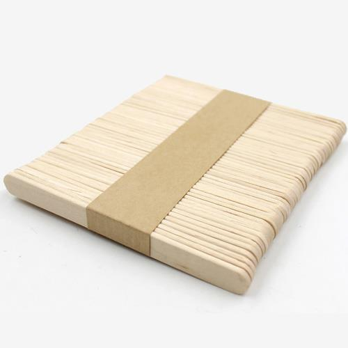
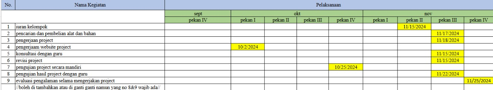

mengubah energi mekanis menjadi energi listrik, yang kemudian digunakan untuk menyalakan lampu.
Teori
Berikut penjelasan teori-teori mengenai proyek generator dengan lampu yang menggunakan roda dan dinamo:
1. Teori Hubungan Antar Roda, Kecepatan, dan Energi Kinetik
- Roda dan Hubungannya dengan Dinamo
Ketika roda diputar, energi mekanis dari putaran tersebut diteruskan ke dinamo melalui penghubung (karet atau sabuk). Hubungan ini mirip dengan mekanisme kerja pada sistem katrol atau pulley. Kecepatan putaran roda utama memengaruhi kecepatan putaran dinamo. Jika perbandingan diameter roda utama dengan roda dinamo berbeda, terjadi perubahan kecepatan putar (transmisi). Contoh:
Jika roda utama lebih besar daripada roda dinamo, maka dinamo akan berputar lebih cepat.
Sebaliknya, jika roda utama lebih kecil, dinamo akan berputar lebih lambat.
- Kecepatan Putar (RPM – Revolutions Per Minute)
Kecepatan roda dihitung berdasarkan jumlah putaran per menit. Hubungan ini dapat dijelaskan dengan rumus:
V = r \cdot \omega
Di mana:
- V adalah kecepatan linier (m/s)
- r adalah jari-jari roda (m)
- omega adalah kecepatan sudut (rad/s)
- Energi Kinetik pada Roda
Energi kinetik adalah energi yang dimiliki benda bergerak. Pada roda yang berputar, energi kinetiknya dirumuskan:
E_k = \frac{1}{2} I \omega^2
Di mana:
- E_k adalah energi kinetik (Joule)
- I adalah momen inersia roda (\(I = \frac{1}{2}mr^2\) untuk roda silinder)
- omega adalah kecepatan sudut (rad/s)
Energi kinetik roda ini dikonversi menjadi energi mekanis yang memutar dinamo.
2. Prinsip Kerja Dinamo Sehingga Menghasilkan Cahaya
- Cara Kerja Dinamo
Dinamo bekerja berdasarkan prinsip induksi elektromagnetik. Ketika kumparan kawat di dalam dinamo berputar di dalam medan magnet, terjadi perubahan fluks magnetik yang memotong kawat. Perubahan ini menghasilkan arus listrik sesuai hukum Faraday:
text{GGL (Gaya Gerak Listrik)} = -N \frac{d\Phi}{dt}
Di mana:
- N adalah jumlah lilitan kawat
- Phi adalah fluks magnetik
Kecepatan putaran dinamo sangat memengaruhi besar tegangan listrik yang dihasilkan. Semakin cepat dinamo berputar, semakin besar tegangan listriknya.
- Menghasilkan Cahaya
Arus listrik yang dihasilkan dinamo disalurkan ke lampu. Lampu (misalnya lampu LED) akan menyala ketika tegangan dan arus yang dihasilkan dinamo cukup untuk memenuhi kebutuhan energi listrik lampu.
3. Penjelasan Bagian Dinamo
Dinamo terdiri dari beberapa komponen utama:
- Rotor (Bagian yang Berputar)
Rotor adalah kumparan kawat yang dipasang pada poros. Ketika poros dinamo diputar (melalui sabuk penghubung dari roda), rotor menghasilkan perubahan fluks magnetik.
- Stator (Bagian Diam)
Stator adalah magnet permanen atau elektromagnet yang menghasilkan medan magnet tetap. Rotor bergerak di dalam medan magnet ini.
- Kumparan Kawat
Kumparan kawat menjadi tempat induksi elektromagnetik terjadi. Semakin banyak jumlah lilitan kawat, semakin besar tegangan yang dihasilkan.
- Poros dan Bantalan
Poros dinamo menghubungkan dinamo dengan roda penggerak, memungkinkan energi mekanis diubah menjadi energi listrik.
4. Penyesuaian dan Optimasi Proyek
Untuk memastikan proyek ini berhasil:
1. Pastikan roda besar memiliki permukaan kasar agar karet penghubung tidak selip saat roda diputar.
2. Pilih dinamo dengan efisiensi tinggi, seperti dinamo sepeda, karena mampu menghasilkan arus cukup meski dengan putaran kecil.
3. Gunakan lampu LED yang membutuhkan daya rendah sehingga cahaya tetap optimal meskipun dinamo menghasilkan arus kecil.
4. Tambahkan kapasitor atau baterai kecil untuk menyimpan energi sementara, sehingga lampu tetap menyala saat roda berhenti sejenak.
Penjelasan ini mencakup prinsip kerja roda, dinamo, dan hubungan energi mekanis dengan energi listrik.
Alat dan Bahan:
DC Motor
Karet
Kawat
LED Light
Lem Tembak
Spidol Biasa
Spidol Marker
Tutup Botol

Stik Kayu
NAYHIANMI
Dokumentasi
Jadwal Kegiatan

Kesimpulan
Proyek ini berhasil memanfaatkan prinsip induksi elektromagnetik untuk menghasilkan cahaya dengan mengonversi energi mekanis dari roda menjadi energi listrik melalui dinamo. Hubungan antara roda, dinamo, dan lampu melibatkan beberapa konsep kunci: 1. Energi Kinetik dari Roda: Energi mekanis yang dihasilkan oleh roda diputar oleh pengguna diteruskan ke poros dinamo melalui sabuk atau karet penghubung. Perputaran roda mengatur kecepatan putar dinamo, sehingga memengaruhi besar arus listrik yang dihasilkan. 2. Prinsip Induksi Elektromagnetik: Ketika rotor (kumparan kawat) dalam dinamo berputar di medan magnet stator, terjadi perubahan fluks magnetik yang menghasilkan gaya gerak listrik (GGL). Arus listrik ini dihasilkan sesuai hukum Faraday. 3. Cahaya dari Energi Listrik: Arus listrik yang dihasilkan dinamo dialirkan ke lampu. Lampu mengubah energi listrik menjadi cahaya, di mana lampu LED lebih efisien karena hanya membutuhkan daya kecil untuk menyala terang. 4. Faktor Keberhasilan:
- Kecepatan putar roda yang stabil.
- Dinamo dengan spesifikasi sesuai (efisien pada kecepatan rendah).
- Pemilihan jenis lampu yang sesuai dengan arus listrik yang dihasilkan.
Dengan desain yang optimal dan pemilihan material yang tepat, sistem ini menjadi solusi sederhana dan efisien untuk menghasilkan cahaya menggunakan energi mekanis, serta mendemonstrasikan konversi energi dari mekanis ke listrik hingga optik.
Terima Kasih atas perhatiannya
Malam hari lihat bintang,
Bersinar terang di angkasa.
Semoga nilai terus gemilang,
Jadi kebanggaan kita semua.